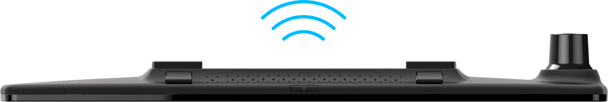

YI Mirror Dash Camera
Видеть больше — водить безопасней!
Видеть больше — водить безопасней!

Двойная HD запись

Сенсорный экран 4.3 дюйма
Запись в темное время

Предупреждение столкновения

Wi-Fi передача
В передней камере используется профессиональный датчик изображения с поддержкой большого угла обзора и разрешения видео до 1080P/30fps, для четкого отображения быстрого движение вперед.
Камера заднего вида 720P (AHD-M) HD, которая охватывает весь вид сзади, чтобы гарантировать большую безопасность при движении.


Зеркало YI Mirror Dash Camera изготовлено из высококачественного материала с высоким коэффициентом прозрачности для лучшего обзора заднего вида, при этом гармонично вписываясь в интерьер автомобиля. Взглянув на 4,3 дюймовый сенсорный экран, вы легко можете проверить ситуацию на дороге и взять ее под свой контроль.
Диафрагма объектива определяет потребление света и качество изображения в условиях низкой освещенности. YI Dash Mirror Camera имеет максимальную диафрагму f/2.0, угол обзора спереди 138° и угол обзора сзади 120°, это обеспечивает отличное качество изображения в ночное время.

Небольшой объектив оснащен профессиональными стеклянными линзами с инфракрасным фильтром для удаления бликов и получения более четкого изображения.
YI Mirror Dash Camera имеет встроенный 3-х осевой гравитационный датчик с низкой, средней и высокой чувствительностью, который активируется в случае чрезвычайной ситуации и автоматически создает резервные копии записей, которые не будут удалены из-за недостаточной памяти или записи в цикле. Кадры полностью защищены, поэтому вам не нужно беспокоиться о недостатке доказательств, в случае возникновения спора.
Стабильный сигнал Wi-Fi и высокоскоростная передача.
После установки приложения на ваш смартфон вы можете использовать встроенный в видеорегистратор wi-fi модуль (2.4GHz), для того чтобы загружать и передавать записи с камеры на ваш смартфон. Получайте доказательства или незабываемые поездки в один клик.